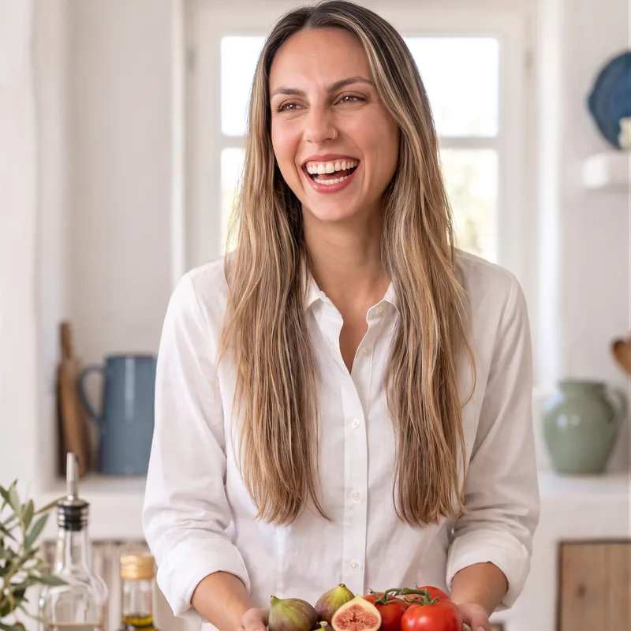
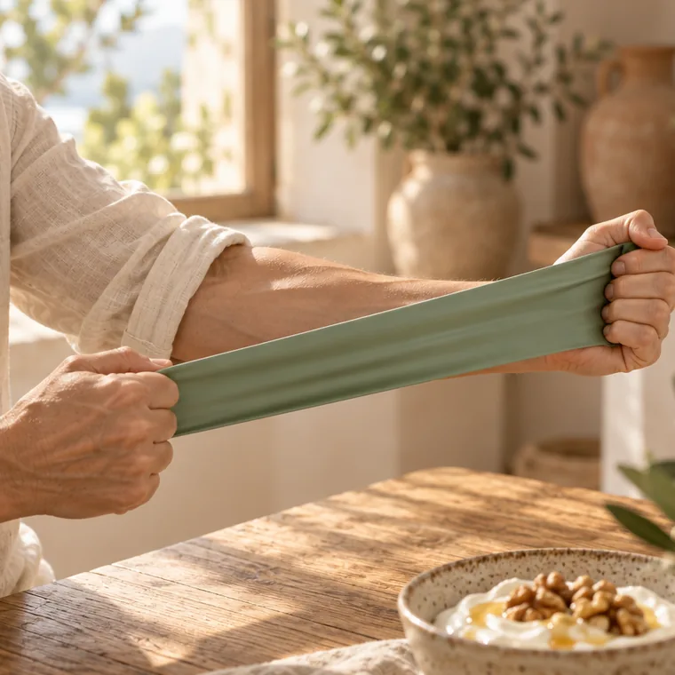
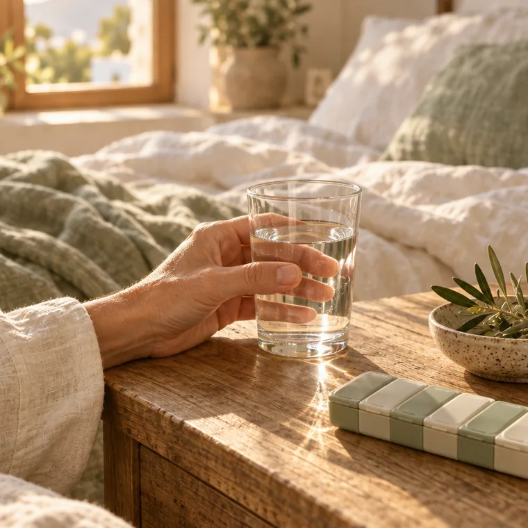

Θέματα υγείας
Διατροφή φτιαγμένη για εσάς
Από την απώλεια βάρους μέχρι τον θυρεοειδή και τη χοληστερίνη, το πρόγραμμα διατροφής βασίζεται στις εξετάσεις σας, την αγωγή που παίρνετε και την καθημερινότητά σας. Διαλέξτε το θέμα που σας αφορά.


Ινσουλινοαντίσταση και Σύνδρομο Πολυκυστικών Ωοθηκών (PCOS / PMOS)
Καμία ειδική δίαιτα δεν έχει αποδειχθεί καλύτερη για την ινσουλινοαντίσταση ή για το σύνδρομο πολυκυστικών ωοθηκών, γι' αυτό δεν κόβουμε ομάδες τροφίμων χωρίς ιατρικό λόγο. Ασχολούμαστε με τη σύνθεση του πιάτου, ποιους υδατάνθρακες διαλέγετε και πότε, την πείνα και τον κορεσμό, και την κίνηση μέσα στη μέρα. Οι αλλαγές αυτές βοηθούν όποιο κι αν είναι το βάρος σας.

Προδιαβήτης και σακχαρώδης διαβήτης
Στον προδιαβήτη ένα σωστό πιάτο και μικρές, σταθερές αλλαγές συχνά βοηθούν πολύ. Στον διαβήτη τύπου 1 και 2 το πρόγραμμα διατροφής προσαρμόζεται στην αγωγή που έχει ορίσει ο ιατρός σας. Μαθαίνουμε ποιους υδατάνθρακες, πόσους και πότε, χωρίς να τους φοβόμαστε.

Απώλεια βάρους
Η ζυγαριά δείχνει πόσο βαραίνει το σώμα, όχι από τι αποτελείται. Γι' αυτό μετράμε τη σύσταση σώματος, δηλαδή πόσο λίπος και πόση μυϊκή μάζα έχετε, και στοχεύουμε να χάσετε λίπος διατηρώντας τη μυϊκή σας μάζα. Δεν κόβουμε ομάδες τροφίμων και τρώτε φαγητά που σας αρέσουν, ώστε το αποτέλεσμα να κρατήσει. Το ίδιο ισχύει και όταν υπάρχει παχυσαρκία.

Δυσλιπιδαιμία (χοληστερίνη, τριγλυκερίδια)
Δεν κόβουμε το λίπος, διαλέγουμε το είδος του. Ελαιόλαδο ως κύριο λίπος, περισσότερες φυτικές ίνες και απλοί τρόποι να τρώτε λιγότερα κορεσμένα λιπαρά, στο μαγείρεμα, στα ψώνια και όταν τρώτε έξω.

Διατροφική υποστήριξη σε αγωγή GLP-1
Με την αγωγή GLP-1 η όρεξη μειώνεται και τρώτε λιγότερο. Φροντίζουμε κάθε γεύμα να καλύπτει τις ανάγκες σας σε πρωτεΐνη και θρεπτικά συστατικά, ώστε να χάσετε όσο γίνεται λιγότερη μυϊκή μάζα. Την αγωγή την ορίζει ο ιατρός σας.

Εμμηνόπαυση και οστεοπόρωση
Μετά την εμμηνόπαυση οι μύες και τα οστά θέλουν περισσότερη φροντίδα. Κοιτάμε μαζί να έχει κάθε γεύμα πρωτεΐνη, να παίρνετε αρκετό ασβέστιο από το φαγητό και να κάνετε ασκήσεις ενδυνάμωσης. Αν χρειάζεστε εξέταση ή συμπλήρωμα για τη βιταμίνη D, το αποφασίζει ο ιατρός σας.

Παθήσεις του θυρεοειδούς
Σε υποθυρεοειδισμό, θυρεοειδίτιδα Hashimoto και άλλες θυρεοειδοπάθειες, το πρόγραμμα διατροφής γίνεται σε συνεργασία με τον ιατρό που παρακολουθεί την αγωγή σας, χωρίς αυστηρές απαγορεύσεις.

Αύξηση βάρους
Όταν το βάρος σας είναι χαμηλό ή η όρεξη λίγη, φτιάχνουμε γεύματα και σνακ πλούσια σε ενέργεια, πρωτεΐνη και θρεπτικά συστατικά, ώστε τα κιλά να έρθουν με μυϊκή μάζα και όχι μόνο με λίπος. Αν χάνετε κιλά χωρίς να το θέλετε, μιλήστε πρώτα με τον ιατρό σας. Ένα τέτοιο χάσιμο βάρους πρέπει να ελεγχθεί, γιατί μπορεί να κρύβει κάποιο πρόβλημα υγείας.

Χρόνια νεφρική νόσος
Στη νεφρική νόσο, το πόση πρωτεΐνη, αλάτι, κάλιο και φώσφορο χρειάζεστε εξαρτάται από το στάδιο και τις εξετάσεις σας. Το πρόγραμμα διατροφής το φτιάχνουμε με βάση αυτά, σε συνεργασία με τον νεφρολόγο σας, ώστε το φαγητό να μένει νόστιμο.

Σύνδρομο ευερέθιστου εντέρου (low FODMAP)
Η δίαιτα low FODMAP γίνεται σε φάσεις: περιορισμός για λίγες εβδομάδες, σταδιακή επαναφορά και ένα πρόγραμμα για μετά, με όσο το δυνατόν περισσότερες τροφές. Δεν είναι δίαιτα για πάντα.

Δεν βλέπετε το θέμα σας;
Πείτε μου τι σας απασχολεί και το βλέπουμε μαζί, δια ζώσης ή online.
Κλείστε ραντεβού